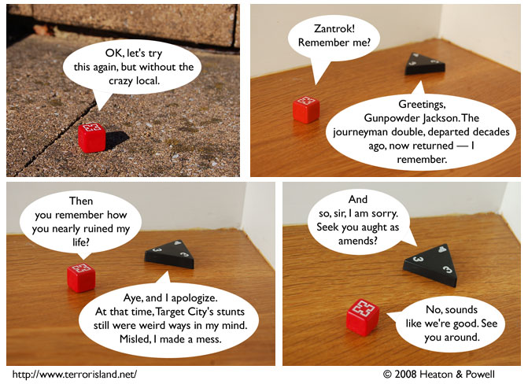

Strip #278
— Friday, March 21, 2008
Gunpowder’s remarks are offensive to crazy locals.
Notes, Thoughts, &c.
Ben’s Notes
If you’re reading Terror Island, you’re probably an aficionado of jokes about sour grapes. I will assume that you are. And I will draw to your attention today’s Alien Loves Predator, which I feel is a very nice execution of the form.
Lewis’s Notes
Zantrok talks that way even when he’s not in a flashback, because he’s half-demon. If he were fully demon, he would never talk that way, even when in a flashback. Genetics and language interact in some odd ways, but we are here to illustrate them for you.
I wrote Lewis’s comments today. He is still at a philosophy convention. -Ben